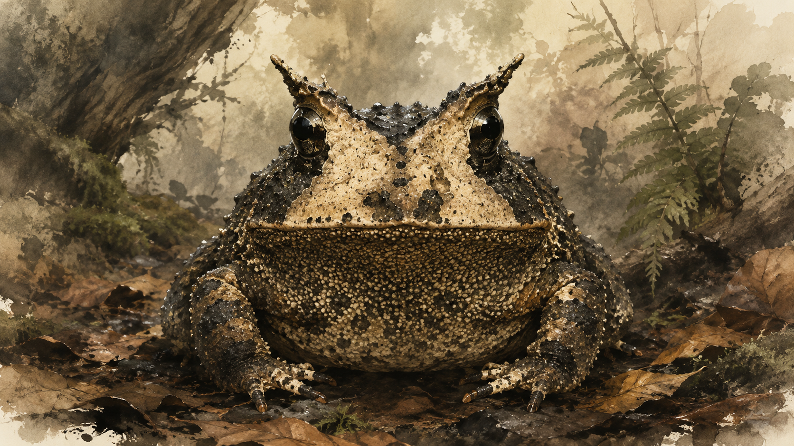
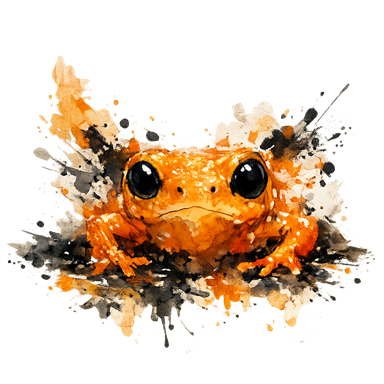
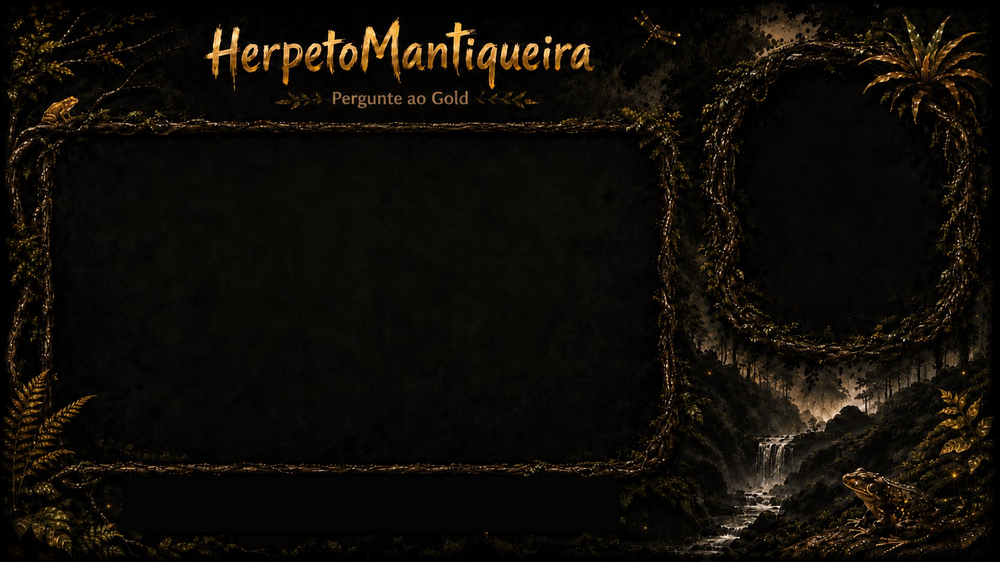
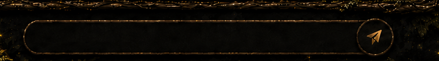
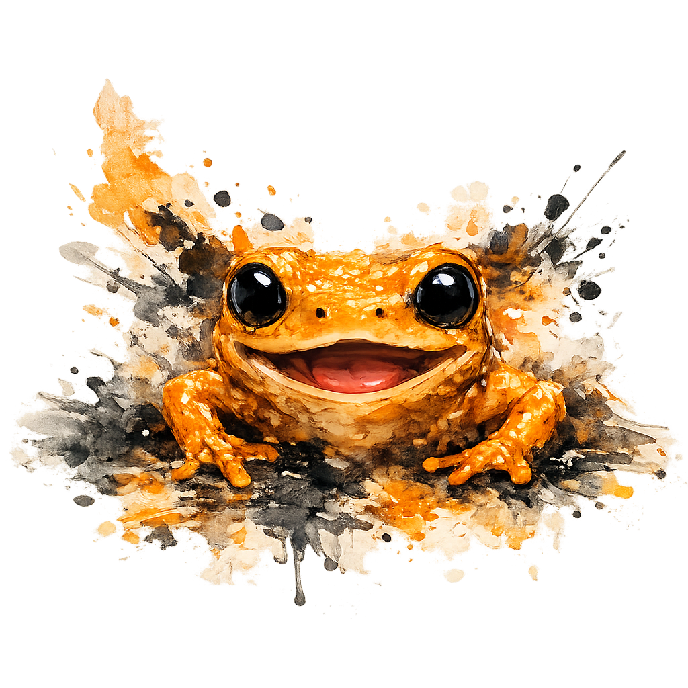

Gold AI Ecológica · Assistente científico
Gold
Ciência conversacional sobre herpetologia, ecologia, conservação e biodiversidade, com foco regional sem limitar a conversa.

Missão
Responder com clareza, rigor e humildade científica.
O Gold foi desenhado para conversar sobre anfíbios, répteis, taxonomia, ecologia, conservação, métodos de inventário, literatura científica e registros de biodiversidade. Ele combina respostas gerais curadas com consulta municipal quando a pergunta realmente exige ocorrência local, voucher, comparação entre municípios ou dados estruturados.
Isso significa que perguntas como “o que é Anura?”, “jararaca?”, “sapos?” ou “o que é busca ativa?” devem receber explicações gerais. Já perguntas como “tem jararaca em Cruzeiro?” ou “quais anfíbios em Bananal?” entram no modo municipal.
Como funciona
Antes de responder, o Gold tenta entender o tipo de pergunta.
Classifica a intenção
Separa pergunta geral, nome popular, taxonomia, metodologia, segurança, consulta municipal, reclamação e mudança de assunto.
Define o escopo
Reconhece quando o usuário fala de Brasil, Mata Atlântica, Serra da Mantiqueira, Vale Histórico ou município específico.
Escolhe a fonte
Usa glossário, base científica, índice taxonômico, biblioteca local, RAG, cache municipal, iNaturalist ou speciesLink conforme a pergunta.
Valida a resposta
Evita falso binômio, loop de município, confusão entre nome popular e espécie, ausência falsa por falha de API e orientação insegura.
EntradaPergunta em linguagem natural
→
EntendimentoIntenção, escopo e táxon
→
ConhecimentoCuradoria, RAG, taxonomia ou cache
→
RespostaClara, contextualizada e cautelosa
Como utilizar
Pergunte do jeito que você perguntaria a uma pessoa da equipe.
Para uma explicação geral, use perguntas abertas. Para ocorrência local, inclua o município. Para comparar lugares, cite os dois municípios. Para segurança, descreva a situação sem tentar manipular o animal.
O que é busca ativa?
Jararaca é uma espécie?
O que é Viperidae?
Quais anfíbios em Bananal?
Tem Bothrops em Lavrinhas?
Compare Cruzeiro e Queluz.
O que é viés amostral?
Bothrops no Brasil.
Prints e telas
O Gold aparece dentro da experiência visual da HerpetoMantiqueira.


Identidade visual
Um pingo-de-ouro desenhado entre tinta, floresta e ciência.
A identidade do Gold parte do Brachycephalus rotenbergae: pequeno, intensamente alaranjado e inseparável da Mata Atlântica. Sua arte mistura referências de Sumi-ê, ink wash e aquarela com uma paleta brasileira, úmida e florestal, sem se apresentar como uma pintura tradicional pura.

Tinta e pinceladas
Um Gold construído por manchas, traços e movimento.
O Sumi-ê inspira a economia e a expressividade do gesto; o ink wash aparece nas manchas, contrastes e bordas dissolvidas; a aquarela acrescenta transparência, sobreposição de cores e respingos. Essa mistura dá vida e movimento ao pingo-de-ouro sem tentar copiar uma pintura tradicional.
Brasil e Mata Atlântica
A tinta encontra cor, umidade e biodiversidade.
Em vez de permanecer monocromática, a linguagem recebe o laranja do pingo-de-ouro, verdes de folhas e musgos, tons escuros de solo úmido e claros quentes de luz atravessando o dossel. O resultado deve parecer brasileiro, vivo e ligado ao campo.
Contraste primeiro
Texto científico precisa ser lido com facilidade em celular, campo, sol, sombra e telas pequenas. Fundos escuros pedem texto claro e acentos usados com moderação.
Cor com função
O laranja identifica ações e o Gold; verdes contextualizam ecologia; tons claros sustentam leitura. Cor nunca deve substituir um rótulo, alerta ou evidência.
Natureza sem caricatura
Texturas, gestos e formas devem sugerir floresta e organismos sem transformar biodiversidade em decoração genérica ou reduzir tradições artísticas a clichês.
Acessibilidade
Botões, campos e mensagens devem funcionar para leitura rápida, toque em celular e pessoas com diferentes níveis de familiaridade científica.
Limites
O Gold ajuda, mas não substitui validação científica formal.
Identificação de espécies, confirmação de ocorrência, validação taxonômica e decisões de manejo exigem evidência verificável e, quando necessário, revisão por especialistas. O Gold também deve diferenciar observações de ciência cidadã, registros de coleção, vouchers, falhas de API e ausência real de dados.
Segurança em campo
Em caso de encontro com serpente, mantenha distância, não capture, não mate e não tente manipular. Em caso de acidente ofídico, procure atendimento médico imediatamente.
Referências
Biblioteca científica local em formato Vancouver.
As referências abaixo foram montadas a partir dos PDFs locais, do índice estruturado disponível no projeto e de metadados DOI quando encontrados. O formato segue o padrão Vancouver usado pelo ICMJE/NLM. Quando autor, ano, periódico, editora ou DOI não puderam ser confirmados, o item fica separado em pendências para revisão, em vez de aparecer como referência final.
Padrão consultado: NLM Sample References e ICMJE Recommendations.
Referências formatadas 0 revisadas automaticamente · 0 totais
0 formatadas · 0 pendentes · atualizado em --
Nenhuma referência encontrada com esse filtro.
Pendências de revisão bibliográfica 0 itens que precisam conferência manual
Estes arquivos existem na biblioteca, mas o texto do PDF ou o retorno bibliográfico ainda não deram segurança suficiente para uma referência Vancouver final. Eles ficam separados para revisão, em vez de poluir a lista principal com citações ruins.
Nenhuma pendência encontrada com esse filtro.